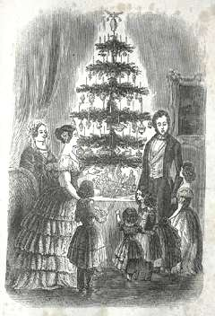

Christmas Tree Story
The evergreen fir tree has traditionally been used to celebrate winter festivals(pagan and Christian) for thousands of years.Pagans used branches of it to decorate their homes during the winter solstice, as it made them think of the spring to come. The Romans used Fir Trees to decorate their temples at the festival of Saturnalia.Christians use it as a sign of everlasting life with God.Nobody is really sure when Fir trees were first used as Christmas trees.It probably began about 1000 years ago in Northern Europe. Many early Christmas Trees seem to have been hung upside down from the ceiling using chains.Other early Christmas Trees,across many parts of northern Europe, were cherry or hawthorn plants(or a branch of the plant)that were put into pots and brought inside so they would hopefully flower at Christmas time. If you couldn't afford a real plant,people made pyramids of woods and they were decorated to look like a tree with paper,apples and canddles.There is another legend, from Germany, about how the Christmas Tree came into being, it goes: Once on a cold Christmas Eve night, a forester and his family were in their cottage gathered round the fire to keep warm. Suddenly there was a knock on the door. When the forester opened the door, he found a poor little boy standing on the door step, lost and alone.
The Paradise Tree represented the Garden of Eden. It was often paraded around the town before the play started, as a way of advertising the play. The plays told Bible stories to people who could not read.The first documented use of a tree at Christmas and New Year celebrations is argued between the cities of Tallinn in Estonia and Riga in Latvia! Both claim that they had the first trees; Tallinn in 1441 and Riga in 1510. Both trees were put up by the Brotherhood of Blackheads which was an association of local unmarried merchants, ship owners, and foreigners in Livonia (what is now Estonia and Latvia).

Fir tree and gave it to the family as apresent to say thank you for looking after him. So ever since them, people have remembered that night by bringing a Christmas Tree into their homes!